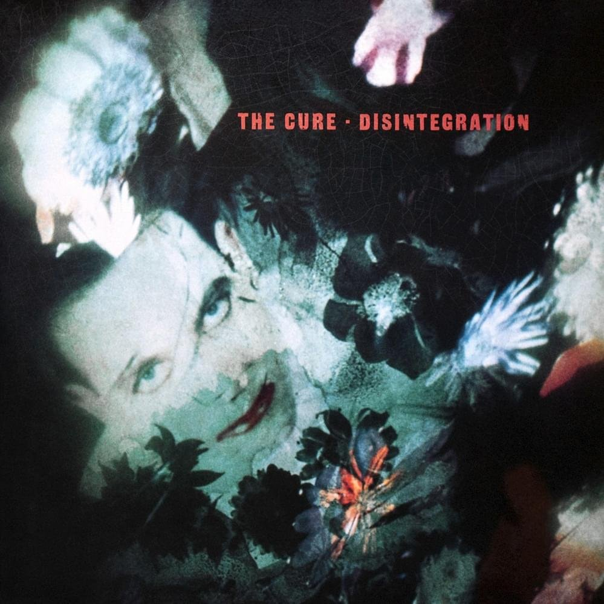

With the 80s ending, The Cure again morphed. Now that all the darkness had been excised from Smith he was free to write songs they expressed happiness again. 1992's Wish features one of their biggest hits and their most lacking in irony or edge, Friday, I'm In Love . The cycle repeated: Wild Mood Swings was akin to Kiss Me Kiss Me Kiss Me 's general mashup. Before 2000's, Bloodflowers finished the gothic trilogy alongside Pornography and Disintegration .This chameleon-like tendency, this constant state of musical flux is what makes them the iconic band that they are. One thing that always stays the same: With every album Smith foretells the end of The Cure. Always concious that all things must at some point end. Pornography was supposed to be the end, then on Kiss Me Kiss Me Kiss Me 's promotion he knew that The Cure would be winding down soon:
-We'll never go back there, I'll never go back and play a concert in America again.
-[Interviewer] Can I quote you on that?
-Yeah.
The Disintegration tour again was supposed to be the end of the group, but this has never come to pass. They still touring, still killing it. They have festivals booked for this summer and if you miss them, they'll probably be there for many summers to come. Love and great music are supposed to be fleeting, and Smith has constantly gone against that. He's been madly in love with his wife since the age of 14,